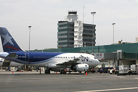
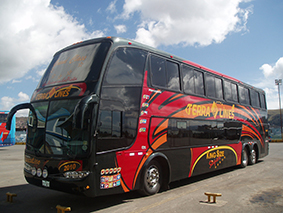
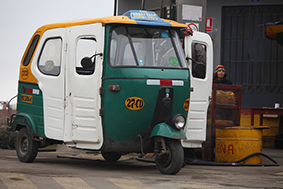
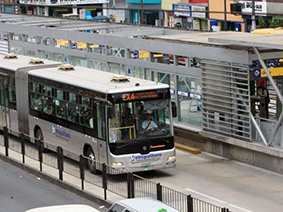
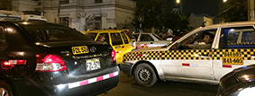

Hi ha molts mitjans de transport en el Perú, però el que els diferencia la seva comoditat o si no qui s’ho pot permetre. Hi ha avions que no porten per les diferents regions o províncies però per un cost molt elevat però en poc temps.
També hi ha flotes d’autocars que van a regions o províncies i que el seu preu varien si són dates de festes. Hi ha molts tipus d’autocars que poden anar de gamma alta (que vagis còmode) o de gamma econòmica (que no vagis tan còmode i podria ser que vagin fent parades en estacions).
Normalment tenen la “mototaxis” que ens serveixen per moure’ns per les províncies, ja que són petites. Normalment en les grans ciutats estan situades per urbanització.
Metropolità transport públic que discorre només per la Regió de Lima, té les seves pròpies parades i funciona amb tiquet. El millor d’aquest transport és que té un carril especial per al sol i va de pressa.
També hi ha empreses de lloguer de cotxes depenent dels dies que et vagis a quedar al país, a més és molt còmode.
També es pot utilitzar els taxis però no és molt aconsellable, ja que hi ha alguns sense papers o sense carnet de conduir. Pot és que algun et pugui robar Dintre del taxi.
I la més utilitzada pels peruans, i per més gent a tot el món és l’app Uber. Aquesta aplicació pots avisar on vols que vinga un taxi de l’empresa Uber fins on vol que el porti fins li posa el preu del trajecte.